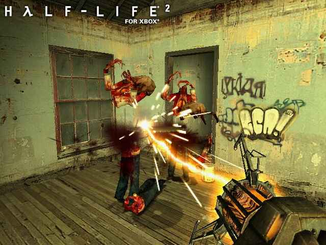

#177168 42 2006-05-17T21:23:24Z AntiGravity My 1st submit:
http://numa.notdot.net/map/42981
T-r-i-p-p-p......
#177908 44 2006-05-20T00:46:29Z AntiGravity Rocket_thumped, I think we need it so that you don't touch the bottom of the ground. Unless there's some sort of loophole...
(Gets out megasuperdestructoloopholeintimespaceandcontestrules 2000 gun and shoots computer)
...
(realizes such a weapon doesn't exist)
...
(Wonders if he isn't allowed to use an avatar like his)
#181998 3 2006-05-29T22:57:36Z AntiGravity I'm in for judge, but maybe there should be a replacement judge if I want to make my own map.
#9144 1 2006-05-31T00:39:46Z AntiGravity I saw some old japanese ninja movie and noticed that all of the ninjas represented different animals, so I thought I could do this for the forums. Feel free to suggest more animals and their styles.
#182521 5 2006-05-31T00:45:00Z AntiGravity Ummm....
Why is this in NUMA discussion?
Anyway, I still suck. Maybe after I've beaten the game I can answer. (9 episodes! yay!)
No other place to put the thing...
#183794 49 2006-06-02T23:26:33Z AntiGravity Since I don't have Photoshop and I'm all new to this, I'll just ask you for a sig.
Description:
A horizontal white line in the middle, with 5 white circles (white circular lines, not filled in circles) around it in random sizes and locations. Name in the corner in some font that may fit the theme.
#184427 55 2006-06-04T10:01:31Z AntiGravity yo antigrav; what background do you want?
Oops. Forgot to mention the background. I'll have it in a simple black, thank you.
#187958 107 2006-06-11T20:38:25Z AntiGravity ok...
Haunted Hallow
Natureness: 38
Funness: 32
Effort: 8
Micro Cuts:
N: 23
F: 30
E: 9
Deep in Roses
N: 38
F: 39
E: 8
Trippin'
N: 37
F: 44
E: 9
Flight
N: 39
F: 37
E: 9
One Chance
N: 27
F: 30
E: 29
Mid Noon Dust Riders
N: 29
f: 34
e: 7
All for now, will post last two in a minute.
#187984 110 2006-06-11T21:24:02Z AntiGravity Oops. One chance's effort is... 6... oops...
Now then...
Heed the call of Gaia:
N:32
F:36
E:7
Ram's head:
N:21
F:41
E:8
Done, whew!
#188107 38 2006-06-11T23:53:32Z AntiGravity http://www.thisisareallycoolsite.com/thisr...y/reallyreally/
This is a really cool site, you have to check it out because it's so awesome man! No spyware or adware or anything of the like is in it!
#9438 1 2006-06-13T00:19:45Z AntiGravity Here's the trick of the game. All you have to do is to type random things, all related to one root thing that I decide somehow. For example, if I decide to do the root word as violence, you can type in "kill bill pie eater gloobularface" (notice it has something which involves violence, which is the mention of the movie Kill Bill and the word kill in itself). You can only use each word once, apart from "the, a, an, and". You are only allowed 3 replies. If you are making an entry for a random reply, put in bold above your reply,RANDOM. The replies will be judged by:
Length:(number of FULL lines, no other ones count so you have to be careful)
Use of root word:#/30
Randomness: #/50 (need very expert randomness judges, not people who do not laugh at random things)
Judges:
AntiGravity (me! YAYZORZ!)S
Mongy (not me! BOOZORZ)
Azmilion (also the name of my imaginary monkey! YABOOZORZZ!)
Backup Judges:
SlicesOfBread (sob! YABABOOZORZ!)
kirby (a nintendo character! BOOZORZ!)
You now have one week, from June 12-18, to think of something random.
Subject: Pie
#188726 3 2006-06-13T00:32:54Z AntiGravity I'd like to be a judge.
Sure thing.
#188737 14 2006-06-13T01:18:37Z AntiGravity Name: Void
Occupation:Paraplegic David Hasslehoff stunt double
Age: 32
Appearance:

Skinny everywhere else
Items (things you wear): Plastic peel off tumor, removable earring, kevlar jacket, pink bunny slippers.
Void wakes up and sees lots of random people doing creepy things, mostly gathered around a corner of a white room, looking at a guy shouting, "We can get out of here, look! look!" He notices there are no doors or windows anywhere and then realizes he is deaf, thus not understanding how he heard the guy. He goes crazy and tries to think of something to cool him down. Everyone is crowded around the corner and have dropped various things. Void takes the remaining traces of a box of Mott's apple juice and mixes it with the feathers from the pillow, dabs in the USB cord and the paper clip and smashes up the wooden part of the tennis racquet, holding the odd mixture in his cupped hands. He then eats all of it and develops a spasm/seizure/drug using moment, thus making everyone look like flowers all dancing around him and swearing at him in a happy song. He beats up one of the flowers for doing so, and in real life gives Brocerion a black eye and a splitting headache, adding to the pain of elaxiongoogoo biting him. Void continues his hallucinatory vision, seeing a door in the room he is in. He constantly tries to open it, but it is locked. In real life, everyone stares at Void, wondering why he is pulling an imaginary knob and singing the tune to disco inferno (the original, not the dumb fifty cent rap).#188740 43 2006-06-13T01:23:36Z AntiGravity #188741 22 2006-06-13T01:30:24Z AntiGravity I know the answer to SlicesOfBread's question!
hmmmmmmmmmmmmiracle!
If this is right, then my question is:
Guy one and Guy 2 had a peculiar race. They would go from point X to Y on bicycle, have a picnic, and go bicycling back. Whoever's bike went back to point X first lost. When the two of them reached point X, Guy 1 took a nap, whereas Guy two took a bicycle and pedaled as fast as he could back to point X. After he got there, he won. How is this possible?
#9439 1 2006-06-13T01:34:54Z AntiGravity Simply put, post some funny anagrams. If you don't know, an anagram is a sentence rearranged to form another one by shuffling its letters around.
Here's one I found that I think is funny:
Kentucky Fried Chicken
converts to
Chef d*** in turkey neck
WEE!
#188745 227 2006-06-13T01:40:55Z AntiGravity Tetris starts getting boring, and the aliens make more advanced video games, like Half Life 2!

#188747 30 2006-06-13T01:43:27Z AntiGravity No lava on avalon. No lava, no avalon.
No lemon, no melon.
#188848 25 2006-06-13T12:08:47Z AntiGravity Atilla was right, though I'm also unsure of whether I answered SlicesOfBread's question.
#188849 5 2006-06-13T12:10:56Z AntiGravity I aplly to be a judge.
does the monkey say yes?
The monkey says no, the person on the computer with a hunched back says yes. Welcome, judge Azmilion.
#189107 20 2006-06-13T23:36:51Z AntiGravity Void continues his hallucinatory vision, in which he is taking a shower. In real life, he rubs sandpaper on himself vigourosly (he made the secret formula for stewroids when he combined the objects), starting a fire on his hand. He bonks himself onto a wall, screaming in pain. The wall catches fire while Void stops, drops, and rolls, saving himself from the pain. Part of the wall is on fire and his hallucinations cease. Wait... the fire could make an exit out of the room!
#189119 299 2006-06-14T00:11:13Z AntiGravity You see, here's how it all went as for girls with me so far:
I like this girl in my class who now sits right beside me. I told her I liked her once a few months ago, yet I was too stupid to ask her out, and now we're just friends. I forgot about it, and then suddenly some other girl said she liked me. I didn't like her back and told her she could move on, and then she gave the accusation that I was ignoring her after the events that happened. Afterwards, she realized I wasn't, and now it seems to me I AM ignoring her. After the girl I like was sitting right beside me, I THOUGHT she might be flirting with me. Maybe it was because it was her, I'm not sure, and now I think I like her again. There's a dance coming up Friday in which she'll come. Should I go along too, or maybe my mind is toying with me?
#189292 24 2006-06-14T12:06:11Z AntiGravity Void, after the fire is big enough in the wall to look through, stomps on it to stop it. He puts his eye carefully through the hole and sees what looks like freeze frames of everybody in the room, doing different things (Meal is cooking in a restaurant, Implied Quotient is working, Brocerius is getting shot in the head, ElaxionGooGoo is starting fires, G-Skorp is getting lucky with some preppy girl, Joe is sleeping, He himself is reading a mad magazine in the alleys, Bob SeeSpotRun is playing N, Beastie is finding out a formula using sandpaper and glue to tear a wall open, and Nick is hustling at the nearby 7-eleven, and Bob is eating turkey). Suddenly, Void's eye is sucked in through the hole, as well as the rest of his body and the other occupants.
"Well, damn," he says to everyone else.
#189584 26 2006-06-14T22:09:49Z AntiGravity Void swims around nothingness and looks at the freeze frame images. He touches his and gets a huge  SPASM
SPASM #189586 572 2006-06-14T22:15:24Z AntiGravity If a synchronized swimmer drowns, do the rest have to drown too?
Also, what is as far as scientists have gone to calculating Pi by decimal places?
#190038 457 2006-06-15T22:15:37Z AntiGravity ^Banned for liking Halo so much as to have a sig for it. Also I don't like Halo...

#9508 1 2006-06-16T11:58:43Z AntiGravity Wrong
Wrong
Wrong
Wrong
This is just pathetic. It's like their idea of a God (note that I am an atheist) is an evil spirit who will kill you if you disagree with His ways.
Wrong...
#190491 466 2006-06-16T22:15:55Z AntiGravity ^Banned due to the fact that I don't know what the discworld thingy is.
#190497 30 2006-06-16T22:20:00Z AntiGravity Void stops experiencing the spasm and decides not to touch the screens without thought anymore. He then steals the pocketknife from Bob SeeSpotRun and throws it at the screen to see what happens. Again, he experiences a SPASM . #190574 16 2006-06-17T00:46:53Z AntiGravity anyway, for some reason i find it funny that theres a hate sweden one... i bet you theres site like those for 50% of the countries on earth...
Nope, none left. Everyone else is on the WBC's side, I guess, lol.
#191340 487 2006-06-18T22:55:13Z AntiGravity ^Banned for making up a dumb organization. I can make better, look:
Interesting
Evil
At
The
Poopie
Incinerator
Evil (again)
#191477 35 2006-06-19T11:57:21Z AntiGravity I'm in the proccess of making a script that replaces all of his posts with pictures of puppies. And then the world will be a better place (you can never have too many puppies).
Oh noes! The off topic is going off-topic!
#191761 21 2006-06-19T23:25:12Z AntiGravity Yo, AntiGravity, may I volunteer to make something for the 1st place, 2nd place, and 3rd place?
Sure, why not? Your time...
#191764 21 2006-06-19T23:27:50Z AntiGravity I will eat at Joe's, then hit Rooney in the nose, who will run to timbukto and explode
#191767 93 2006-06-19T23:35:49Z AntiGravity The Gravity Gun from half life 2...

#191768 494 2006-06-19T23:37:55Z AntiGravity ^Banned for having broccoli in your avatar.
#191773 35 2006-06-19T23:48:53Z AntiGravity Void suddenly notices that some of the posts say they're still in the room, probably due to magical teleportation. He also notices he is alive, even though he should be dead, according to elaxiongoogoo. More to the bugginess, it seems that the items keep being used, then re used after being completely wasted. Adding to troubles, it appears that brocerius is dead, or not posting anymore. Using his ideas, Void decides to have another SPASM because he likes its feel now that he's adapted to it. #191775 153 2006-06-20T00:01:45Z AntiGravity Tomorrow comes Today
~Gorillaz~
Hope noone said that one...
#191781 497 2006-06-20T00:16:25Z AntiGravity ^Banned for ot realizing that if he/she used the letter Q more, he/she would not have banned the forumer.
#9589 1 2006-06-20T00:50:06Z AntiGravity I have devised a simple contest, hopefully not done before, called the OBJECT COMPETITION. The point is, I will make a combination of different enemies and objects in a blank level. You have to put in a tileset for it, along with some extra objects if desired. It will be scored by:
tileset(You need to make one): Numberz!/20
Fun(No non- playables): More Numberz!/20
Effort(Probably depends on the judge, but oh well): Even More Numberz!/10
Total(obviously): Ninja Monkey Numberz!/50
Deadline is July 3rd, I'll change it if needed. Now, I need judges who are flexible with any changes, or that, or backup ones.
Judges:
AntiGravity(Me)
-----
-----
(more if needed)
Backup judges:
-----
-----
#191918 3 2006-06-20T12:13:33Z AntiGravity you need to make it to were yuo cant put in more objects because then you wont be able to tell...
I dunno, I won't be adding that many objects, I'll just search for symmetry. And holy cow, you're still in the community or just posting in forums?
#192212 2 2006-06-20T23:53:17Z AntiGravity Sweet, I'm in. Useless post!
#192217 3 2006-06-20T23:59:33Z AntiGravity If you say exotic location, are you allowed to show a map of the area?
#192218 16 2006-06-21T00:07:17Z AntiGravity 2406:17895424|17895697|17895697|17895697|17895697|17895697|4369|0|0|0|0|0|0|96468992|22369621|71618833|107234372|35808870|35791394|139810|17895696|17|35782656|35791394|17895680|17895697|17895697|17|17895696|17895697|1118481|71614464|89478484|1118481|0|33554432|35791394|35791394|35791394|35791394|35791394|35791394|17826338|17895697|17895697|17895697|35782673|35791394|2|4369|17895424|17895697|17|17895697|35791360|107880994|107374182|107374182|107374182|35791394|35791394|81928738|71582788|89478212|18175317|17895697|17895697|1|35791360|35791394|35791394|35791394|546|71614464|89478485|17895697|17|35791392|35791394|139810|4369|1118481|35791392|35791394|17825826|4369|0|69905|35790848|546|16777216|17|0|71680000|35792452|35791394|35791394|546|0|0|0|17895697|69905|0|0|35651584|35791394|35791394|2236962|17895680|4369|0|0|201326592|36071014|35791394|546|0|0|0|0|0|0|0|17895680|17895697|17895697|88866817|18175317|4369|35791360|35791394|35791394|2|0|17895697|17895697|17895697|17895697|69905|17895696|201326592|89478212|22369621|71684369|23488102|17895697|17895697|17895697|17895697|17895697|17895697|219152385|89478485|22369621|71618833|107374182|71591526|89478468|72701269|33571908|35791394|35791394|35791394|0|0|17895424|17895697|17895697|17895697|17895697|17895697|1118481|35791392|2236962|0|0|2097152|107443548|107374182|107374182|17983078|17895697|17895697|17895697|17895697|17895697|17895697|0|0|0|0|0|0|0|89476096|1135957|107365452|19015270|17895697|17895697|17895697|17895697|17895697|17895697|17|0|0|0|0|201326592|89478485|219223381|107374180|107374182|107374182|35792486|35791394|35791394|546|0|17895424|17895697|17895697|17895697|113246481|107374182|89408582|18175317|17895697|33554432|35791394|35791394|35791394|35791394|35791394|35791394|35791394|34|0|0|201326592|89478485|17895701|17895697|17895697|17|35791392|35791394|35791394|34|0|0|0|35651584|35791394|35791394|35791394|35791394|35791394|72089600|35808870|88360046|22369621|69905|17895424|1|35791360|35791394|35791394|35791394|17825826|17895697|4369|0|0|0|0|0|0|35651584|35791394|546|35790848|35782690|35791394|65536|17895424|69905|35791392|107880994|107374182|35792486|73819874|89478468|21|35791392|0|17895696|35790865|16777218|17895697|17895697|1118481|35782656|139810|35790848|17895426|35790848|8738|0|0|0|0|35782656|35791394|107374190|35792486|139810|35782656|35790850|17895426|17895697|17895697|17895697|4369|35791392|8738|17891328|17895697|4369|35791394|546|0|0|89985024|17913173|17895697|17895697|17895697|17895697|89480465|89478485|349525
2406 frames! YAY! Pie... wait, does the top part mean how many frames I completed?
#193702 1655 2006-06-24T00:21:32Z AntiGravity Granted, but some evil cookie house eater goes and eats it.
I wish I was the best N highscorer in the world (as in, no FbF)
#193704 1058 2006-06-24T00:23:26Z AntiGravity 7/10, fun spinning kid sprite thin from some game I don't know.
#193707 52 2006-06-24T00:26:14Z AntiGravity AntiGravity thankfully avoids the syrup with an umbrella, but gets a pie 47 bullet stuck in his chest, making him throw up around the whole place, mostly at the next poster (vomit IS food, you know...)
#9720 1 2006-06-27T01:08:58Z AntiGravity Simply put, I choose two different characters (maybe suggested by you) from the entertainment industry (like Cloud, Chuck Norris, you know). Next, the next ten posters will start a fight on who will win, posts 1-3-5-7-9 being for P1, and posts 2-4-6-8-10 for P2. Then, I will declare the winner by looking at the effectiveness of the attacks and/or defenses. You can only either BLOCK, DODGE, or ATTACK in one post. The attacks involve different things related to the character. 1 post per person.
So then:
P1:Gordon Freeman (Half Life 1-2, developped by Valve)
P2:Master Chief (Halo 1-2-3?, developped by Bungie)
Note: It helps to know who you are talking about!!!
#195461 2 2006-06-27T20:43:22Z AntiGravity Kirby, oh Kirby,
inhaling his foes,
The player of N,
Beating many rows.
Kirby, oh Kirby,
Nintendo's cute thing,
You'd better get ready,
The boss battle's coming!
#195463 49 2006-06-27T20:47:32Z AntiGravity Unfortunately, the shoe bribes the judge in court, thus releasing him.
#195469 51 2006-06-27T20:51:26Z AntiGravity Fortunately, the 7 people still stay for no reason, perhaps the space time continuum.
#195562 4 2006-06-28T00:34:07Z AntiGravity I'm glad someone finally posted. 
Actually, I posted in the morning the day I posted it.
#195567 70 2006-06-28T00:45:45Z AntiGravity Ok, I'm in, as long as you don't mind downloading a font I like.
Download
this font, make the text white (with the background black), and have my name written in it like this:
(AntiGravity)
Next, make it shake a bit, as well as two copies of the text, transparent, and also shaking. No, I'm indie, not emo, I just like the font, lol.
#195751 9 2006-06-28T12:01:03Z AntiGravity Elaxion, his avatar
Displays a normal tetris star,
His sig for now is good in fights
It has one of Doom 3's hell knights.
#195753 2326 2006-06-28T12:06:44Z AntiGravity The Pyramid is his goalie blocker!
#9800 1 2006-06-29T23:18:49Z AntiGravity Challenges 1-5 are OVER. New challenges are here.
Forget it, I'm ending due to lack of posts
Alright, we have winners in the losers circle! By the way, a new rule is made: the challenges end at 7:30 PM, GST or whatever blaploo.
Loser's circle:
chasethebase
Accomplishments:challenges 1 and 2
cyberjuda
Accomplishments:challenges 3, 4, and 5
WEE! New challenges to come!
As the title implies, you will try to kill yourself as quickly as possible, in the least frames possible. I will select some maps once every two weeks and you will try to kill yourself as quickly as possible on them. If you want to submit a demo of your speed incompletion, send it in a .txt file (No frame by framing!!!). Also, if you are posting saying you have a demo, say it in bold text, reading:
Demo for challenge (challenge num. displayed on the current challenge text). You are allowed to post a maximum 4 demos per challenge. The fastest incompletion will receive a place in what I call "the round table of losers". Winners (losers to others) of previous challenges can try to keep people away from the RTL by competing in other upcoming challenges.
Challenge's start:July 13, 2006
End of the challenge:July 27, 2006
New challenges
Challenge 6:I have the touch
Challenge 7:Monument
both by Jiggerjaw12358
Challenge 8:Do not look down
Challenge 9:Better than sliced bread
both by theshav
Challenge 10:Pseudo by tktktk
Old challenges
Challenge 1:Twisted by Killisk
Challenge 2:A Million Miles by AMomentLikeThis
Challenge 3:Hedge by Zorn (probably impossible to die in)
Challenge 4:Cluster by tktktk
Challenge 5:Halftone by Lucidium
Good luck!
EDIT: You CANNOT press the [k] or [enter] key to kill yourself!
#196615 3 2006-06-29T23:26:16Z AntiGravity A suggestion. Hedge by Zorn. (can't link it now)
Maybe next time, I always wanted to see how "Twisted" would work out.
#196625 4 2006-06-29T23:54:28Z AntiGravity NOTE THAT I AM LYING!
You will be able download secret betas of later versions of N by obtaining a secret html code if you beat all the level 4's in the 20's column (and no other ones). Also, you get a scource code of the version you are playing. You must make sure, when having NumLock on and pressing 5 to turn on the cheat box, to type in, exactly, even with the capitals, FlAbBeRgAsTeD. That way, when you turn on practice mode, it will be timed and you can skip to every fourth level without worry. Once you obtain the secret demo download section, you will have a sort of secret account to log on to when you want to download a beta version.
Another cool trick is the sell your soul hack. After you die on a level, press [R] to replay it. During that time, type in SELLYOURSOUL, with capslock turned on. When you play the level after the replay, your demo will continue running and the enemies will not notice you (You will go through EVERYTHING, even tiles, but you will be able to touch the exit and its switch. Also, hold [space] to stay firmly on an invisible horizontal ground), only your previous attempt at beating the level, as you run around. When the ninja dies, though, you die too (not counting starvation).
Next up is my favourite trick/ hack: a demo idea that got ditched during production of 1.4, in which you can make a certain priority of enemies to remove the other ones, even mines and other objects. While you are playing any level at all without Ned, press - on the numpad and press * on the numpad as well, then press a button on the keyboard for a certain enemy to become your friend and not hurt you, but others. You can only select one enmy at a time.
1 for gauss turrets,
2 for homing launchers,
3 for mines (if an enemy or object is on them, the enemy or objject disappears),
4 for floor guards,
5 is for thwumps,
6 is for zap drones, p for seeking ones,
7 is for laser drones,
8 is for chaingun drones.
To deactivate it, press - again to make the menu close. You can only select enemies that are already there.
Want to unlock all flavours? Play each episode column diagonally, in practice mode if you want.
Want to see yourself die in slomo? Kill yourself 10 times on 00-0, then beat it; kill yourself 9 times on 10-0, kill yourself 8 times on 20-0, and so on until you kill yourself once on 90-0, all in a straight order.
There are ten secret skins not available in the flavours section: Mario, Luigi, a stickman (the old idea for the ninja before N came out at all), a rainbow ninja, a ninja with Mare's head, a ninja with Raigan's head, a bouncy ball, a rainbow stickman, a ninja with an extra large head, and a red bouncy ball (the other one is black). To unlock them, pray to the tiki god Bulagagagagagagagagagagagagagagagalorp by spelling his name backwards. Then, your computer will freeze. Restart it and you will have the other flavours.
There is a secret link called the surprise package in a certain website that will do something to your N program! Simply copy and paste this text onto the Ned level data box, then edit it, puttiing in a ninja at the exact middle of the map. Copy and paste the code onto the internet browser, and the link will lead to a surprise package, changing the code in N to do something else, noone knows what.
Armaggedon; the god of all unlocked things. If you beat 00-0 without dying and beat the rest of the levels dying at least once, you are able to spawn 50-1000 or so different ninjas who will run around in random directions. Be sure to be prepared for your comp to lock up.
N was actually designed as an undercover illegal peer to peer file sharing device in Flash MX, but was covered up by Mare and Raigan. To activate it, you must type in the name of a fruit in the cheats menu, then eat the very same one (the metanet community SEES you play N all the time, they're watching us all). Open up your internet browser and go to NUMA. It will have a different section for the peer to peeer file sharing.
#196640 6 2006-06-30T00:45:21Z AntiGravity Oh, as another note, beating the game WITH OUT DYING (yes, you heard me right, with out dying even once) will unlock 2 enemies that are usable on NED: The sticky mine (when touched, keeps you in place for 2 seconds) and the shotgun drone (kinda like a chaingun drone, but fires 5 bullets in a spread once at you)
Look above your post, I'll update minutely!
#197188 4 2006-06-30T23:33:45Z AntiGravity Demo for challenge 1:
Woo! 254 frames! Beat that, all!
Attachment (lost): post-21-1151710425.txt
#9853 1 2006-07-02T11:37:31Z AntiGravity ... I can't seem to see the section reading "music in N". Do any of you know the link? If not, why not discuss it here? It would be pretty cool to have music IN N instead of adding more lag by opening up Winamp or something to jam while getting killed by various enemies.
#198495 8 2006-07-03T23:41:28Z AntiGravity Surely you cannot just press enter/k/whatever, 'cause I would pwn you all!
if not, demo for challenge 2, 73 frames!!!
73:17895697|17895697|17895697|17895697|89478493|89985301|107374181|71583334|71722596|71582788|1092
Whoops, forgot that. Alright, you can't do that.
#199415 3 2006-07-06T00:59:03Z AntiGravity Hello again. Check these out. They are music with animations to go along with it, such as a circular piano that launches small balls to hit the keys, or guitars with stick arms to hit the strings and bounce to it's own music while rolling on a track with others like it. Or, how about little robotic dudes that play futuristic instruments built into themselves? A triple legged mega guitar that has 7 diffrent instruments in 1?
Go to animusic.com!
Here are a couple of the full songs free on google video.
Pipe Dream The best one!
Future Retro
Starship Groove
Pogo Sticks
There are many more, check 'em out!
A little question: are these objects actually implemented in real life?
#200132 5 2006-07-07T23:38:25Z AntiGravity me nothing in gimp. me only had gimp for a week.
EDIT: Huh? Who posted this?
#201479 7 2006-07-11T23:34:01Z AntiGravity I need a simple sig.
Background black, taxt white, on the bottom, covering maybe 60 percent or so of the screen. Take a font you like, I'll tell you if I like it. Also, make a kind of breeze effect from the top of the text.
#202379 16 2006-07-13T23:46:22Z AntiGravity Im going to PM AntiGravity. I think he forgot about this contest.
Haha! Nope, I've updated.
#10126 1 2006-07-18T23:22:10Z AntiGravity It was as normal as it was at the party for me, being not much to party about. People were getting drunk and seeing stars, the chicks were ugly, and I wasn't much of a thing to look at either. Black hair hanging down to my ears,almost ouching my eyes, a nose, which was, in my opinion, ugly as hell, no abs or somthing- packs, and a boring personality. The combination of such things made me, a pathetic guy at the age of twenty one. Like I said, I wasn't that much to look at. I had always wondered why I went to parties like this if I wasn't attracted to anyone and nobody was attracted to me; perhaps it was because of the free beer, or the fact that my friends (wait, I had friends?) lured me into it. It didn't matter that much anymore, as to the fact that I was wasted. I walked around groggily, spilling a glass of beer on myself, and collapsed on the floor. Standing up, I sat down on a nearby chair and took a few deep breaths. Sitting, I thought. Not about anything in particular, but I thought. beer, breath, girl, sex, music, bathroom, I my head babbled. god, guy, sleep, home, bed. Everything was getting blurrier and blurrier the more I thought. I was tired, and it was somewhere around 4:00 AM. I then got sick and vomited on the carpet, falling down on my own dinner from exhaustion.
Whatever and ever then I died the end.
#204184 24 2006-07-18T23:26:30Z AntiGravity From what I see, this is just one huge spam lot. Might as well contribute to it. as for EmoForm, I'd like to see it depress people's teeth enough so that they fall off, dying a cruel death of total suckedness.
#204187 3 2006-07-18T23:30:26Z AntiGravity NO.
Couldn't you tell? My story of suffering never goes appreciated. Kirby, you make me cry a thousand tears, then use a really huge kleenex.

WHY? Why did they all dissappear? There are no more giant kleenexes! Augh!
No, I just wrote it to tell you about how an imaginary guy in my messed up head got drunk. I AM PATHETIC.
#204192 12 2006-07-18T23:43:55Z AntiGravity Three nuns were talking to each other about what they found in the pope's closet.
"I found a pair of pornography magazines in his closet once," One of the nuns said.
"What did you do afterwards?" asked the nuns.
"Why, what any sensible nun would do," she continued, "I threw them out."
"Well, once, I found some condoms in the pope's closet," said another nun.
"What did you do afterwards?" Asked the other two nuns.
"Why, what any sensible nun would do," she continued, "I poked holes in them."
The last nun then gasped and said, "Oh, shit!"
#10413 1 2006-08-02T00:16:26Z AntiGravity Post crappy artistic junk here, posted in BnT so as to add any other variating ideas.
Just post anythin you've made here. Enjoyez.
This is dumb, ain't it?
#10749 1 2006-08-20T21:52:01Z AntiGravity I'd love to see some tutorials on cool effects for mapmaking in Ned. Not as in a category in the forums, just here might be nice and would save the hassle, like the teleporter tutorial (link for it will be added later. For example,for a form of "broken up tiles" effect, cool mine placement, other things along that line.
I do guess there is one flaw in this: repetitive, and slowly, unfun maps, lacking creativity. But I think some of us have minds that think as well.
Wee.
#217710 3 2006-08-20T22:11:36Z AntiGravity Nice design + good object placement + great gameplay = good map.
Drat, a good point. My whole evil plan is ruined... AND YOU!!! You stopped me! I shall RETURN!
#248182 10 2006-10-31T01:25:29Z AntiGravity ...Everyone who plays it gets a lifetime supply of twinkies.
He's so emo that...
#248189 608 2006-10-31T01:46:00Z AntiGravity Gets a BBC gun. (note the misspelling)
*Inserts soul*
#248396 13 2006-10-31T21:48:47Z AntiGravity ...That you can see the moon through them at night in almost totally atomic detail.
My monkey is so greasy...
#248415 24 2006-10-31T22:26:50Z AntiGravity Whoa, a toughie there. With the "When", it'll be hard to make a sentence because you have to describe something, then describe another thing. Here is my best effort:
It's noon, I'm bald? (4 words; no room for three)
I will add a fragment once this is assured or can be made into a three word sentence instead.
#12033 1 2006-10-31T22:35:55Z AntiGravity In this competition, you must make a map that shows an innovative and new trick in N. For example, check the map "Peekaboo", by Legacy Team. There, rockets are enclosed between four one way platforms and four doors. When the ninja gets near the square, the rocket will activate if given enough time to do so. More exact rules are as follows:
-The competition will end and judging will begin November 30 if this doesn't become a dead topic.
-Three submissions per person is the maximum.
-The judges are selected in a "first come, first served" style.
Judges:
ME!!!1121LOL
--
--
-- (backup judge)
I hope I'm not ripping off anyone elses contests here...
#12034 1 2006-10-31T22:36:42Z AntiGravity In this competition, you must make a map that shows an innovative and new trick in N. For example, check the map "Peekaboo", by Legacy Team. There, rockets are enclosed between four one way platforms and four doors. When the ninja gets near the square, the rocket will activate if given enough time to do so. More exact rules are as follows:
-The competition will end and judging will begin November 30 if this doesn't become a dead topic.
-Three submissions per person is the maximum.
-The judges are selected in a "first come, first served" style.
-edit: OOPS. My mistake; judging criteria is out of:
1:fun (x.x/10)
2:creativity (x.x/10)
-EDIT 2: OOPS AGAIN. forgot that you may not resubmit old maps. Sorry.
Judges:
ME!!!1121LOL
--
--
-- (backup judge)
I hope I'm not ripping off anyone elses contests here...
#248460 582 2006-11-01T00:46:16Z AntiGravity pp
#248461 583 2006-11-01T00:46:32Z AntiGravity #249046 7 2006-11-02T13:19:53Z AntiGravity Sorry for the accidental double topic. That's odd. Oh well.
#249296 3133 2006-11-03T00:34:45Z AntiGravity Rated Ramifications, Moonlight Starbright, Piccadilly circus.
The gold, it calls...
A map which needs
5 more ratings.
#12065 1 2006-11-03T00:47:06Z AntiGravity I looked at the bottom of the main screen in the metanet forums. It stated that the biggest number of users online at the same time was on June 2nd, 2006, 07:14 PM. I propose a challenge.
We will create a day in which over 131 users will be online. The hard part is planning. What day will it be? Will the day ever come at all? Will we set up another day to beat the record after the current day? Who knows? WHO CARES?I know I do...
So, comment on it, and we'll see what will happen.
#249312 4 2006-11-03T00:57:07Z AntiGravity And how would we do it? E-mail everyone we can? 
EXACTLY.
Ahh, the raving mind of a homicidal maniac like me.
Anyways, I suppose such a thing may work. I mean, consider this: image worms. Their only difference is the fact that there is no division by date. To create the ultimate day would just be a (to me) more fun challenge.
Plus, I wanna count how long this lives, but that's for some other time.
EDIT: Ugh. Okay then. I need someone to lock this.
#249319 9 2006-11-03T01:04:20Z AntiGravity
-EDIT 2: OOPS AGAIN. forgot that you may not resubmit. Sorry.
Sorry, but what does this mean?
Check again, my sir.
#249337 114 2006-11-03T01:45:17Z AntiGravity The egg would come first if Darwin's theory was a law.
Really, that's all I can say at the moment.
#249480 626 2006-11-03T13:03:25Z AntiGravity You get a vibrator.
Inserts Monty Python quote...
#12120 1 2006-11-05T21:59:27Z AntiGravity Every two weeks, I will present a set of five maps. You will attempt to kill yourself as quickly as possible in one or more of the five different maps and submit your demos . No using the enter key or fbf. You are allowed three demos per map. The fastest death on each map is put into the FDCRH (Fast death challenge record hall), soon to be made on this very topic.. After the fastest demo has been displayed in the FDCRH at the end of the two weeks, you are not allowed to post something which beats that record and expect to HAVE your demo in the FDCRH. If you are submitting a demo, be sure to type up the challenges you are doing in
bold text so as to be very clear. Be sure to submit your entry in the
code
format, or as a file attachment (.txt extension). Enjoy!
Current Maps (
challenge from November 5th to November 19th):
1:Hedge by Zorn
2:Cluster by tktktk
3:Crooked by walrus_of_death
4:Halftone by Lucidium
5:Cyclone by Jiggerjaw12358
Note; this is a re-post from a long while ago. Also, Hedge is possible to die on.
#250538 3 2006-11-05T22:13:11Z AntiGravity Isn't this like a suicide mission?
Yes, but with a
TWIST!
Anyways, that was kind of a useless post, and so is this one, so goodbye.
No, wait, speculation!
How long are you betting it will last before it dies out or there are no more maps that are good for this anymore?
Regarding the two posts below this one, I kind of like it just for its little innovation.
#250556 6 2006-11-05T22:36:23Z AntiGravity Maybe the two of you could try it. Come on, it won't hurt #cough#.
#250561 8 2006-11-05T22:50:36Z AntiGravity Here, a suicide demo for Halftone.
Quote
283:17895697|17895697|17895697|17895697|17895697|17895697|17895697|17895697|17895697|30478609|107374188|107374182|107374182|107374182|107374182|107374182|107374182|107374182|107374182|115500646|107374182|107374182|107374182|107374182|35792486|89480482|89478485|89478485|89478485|107374181|71591526|71582788|68|0|35791360|8738|0|0|0|0|0
How was the "groovy experience", huh d00d?
Also, do you want it submitted, huh d00d?
Sorry, I was bored with the d00dles.
But really, want it submitted?
#12137 1 2006-11-07T00:31:05Z AntiGravity Did you know...
That of all the current 66808 maps on NUMA:
19630 have been deleted?
47177 still exist?
19150 are rated?
47658 are not?
Post your fun N facts here and I'll just put them on the top of the page!
#250981 89 2006-11-07T01:24:49Z AntiGravity Awesomezorgenjorganborgenhertzasometinaltamancopromenade!
Anyways, I would like to have a sig+avatar combo.
630x100 pixel sig specifications:
1:Get a smiling emoticon of your choice. Enlarge it, tilt it, and put it to the right. This allows me to see the smile, but not the whole of the emoticon. Vector it to your liking, if you want.
2: Make a background matching the emoticon's colour, making it a bit like your sig, except replacing arrows with circles.
3:Write my username on the bottom right corner with some nice bulky yet long font.
100x100 pixel avatar Specifications:
1: The same tilted emoticon covering the left of it.
2: "A.G" printed small, yet legibly, on the right, covering the bottom.
3:same decorations on the background.
Sorry for being a little picky...
#12172 1 2006-11-09T01:36:11Z AntiGravity This is not like a post about banned users, but something commemorating classics who left a bad or good mark on the Metanet community. Post your users for fun!
Here's mine:
Name:Computer222
Predicted age:Computer222 has once claimed to be 5 years old, but with Computer222's knowledge of 1337, he/she must be 9 or older.
Member number:4886
Quote:comment it rate it demo it
Mark:Famous/Infamous
History:Computer222 had a reputation for churning out maps with bad ratings due to some problems, namely:
-The inability to use Ned properly (or so it seemed to me)
-His/her love of making maps with lots of clustering
-Too lazy to go on.
He had made many deds to people who beat his easy maps, adding significantly to his/her map count (104 maps). At his 104th map, he left NUMA forever, creating mixed feelings among the Metanet community. It is possible that he currently carries a new alias, but this is highly unlikely due to Computer222's unique style of clustering, his quote, and his speech.
How do ya like it? Post yours!
#252243 777 2006-11-09T21:53:04Z AntiGravity Leaves are falling down
On the beautiful ground
I heard a story from the man in red
He said the leaves are falling down
Such a beautiful sound so I think you
Son, I think you better go ahead
But you always hold your head up high
Cause it's a long, long, long way down
This town was meant for passing through
But it ain't nothing new
Now go and show them
That the world stayed round
But it's a long, long, long way down
You better run for the hills before they burn
Listen to the sound of the world
And watch it turn
I just want to show you what I know
And catch you when the current lets you go
Or should I just get along with myself
I never did get along with everybody else
I've been trying hard to do what's right
But you know I could stay here all night
And watch the clouds fall from the sky
This river is wild
This river is wild
Run for the hills before they burn
Listen to the sound of the world
Watch it turn
But shake a little
Sometimes I'm nervous when I talk
I shake a little
Sometimes i hate the line I walk
I just want to show you what I know
And catch you when the current lets you go
Or should I just get along with myself
I never did get along with everybody else
Ive been trying hard to do whats right
But you know I could stay here all night
And watch the clouds fall
From the sky
Because this river is wild
God speed you boy
This river is wild
Now Adam's taking bombs
And he's stuck on his mom
Because that bitch
Keeps trying to make him pray
He's with the hippie in the park
Coming over the dark
Just trying to get some of that little girl play
You better run for the hills before they burn
Listen to the sound of the world
But watch it turn
I just want to show you what I know
And catch you when the current lets you go
Or should I get along with myself
I never did get along with everybody else
I've been trying hard to do whats right
But you know I could stay here all night
And watch the clouds fall from the sky
And pay this hell in me tonight
Because this river is wild
God speed you boy
This river is wild
God speed you boy
This river is wild
Now the cards are everywhere face in dust
The fairground
I don't think I ever seen so many headlights
But there's something pulling me
The circus and the crew
Well they're just passing through
Making sure the merry still goes round
#252245 778 2006-11-09T21:55:57Z AntiGravity Nobody ever had a dream round here,
but I don't really mind and/that it's starting to get to me
Nobody ever pulls the seams round here,
but I don't really mind and/that it's starting to get to me
I've got this energy beneath my feet
like something underground's gonna come up and carry me,
I've got this sentimental heart that beats
but I don't really mind (and) it's starting to get to me
Now.."Why do you waste my time?"
Is the answer to the question on your mind
And I'm sick of all my judges
so scared of what they'll find
But I know that I can make it
As long as somebody takes me home,
every now and then...
Oh, have you ever seen the lights?
Have you ever seen the lights?
I took the shuttle on a shock-wave ride,
where the people on the pen pull the trigger for accolade
I took a bullet, and I looked inside
Running through my veins
An American masquerade
I still remember Grandma Dixie's wake,
I never really known anybody to die before
Red white and blue upon a birthday cake,
My brother, he was born on the fourth of the July...and that's all
"So why do you waste my time?"
Is the answer to the question on your mind
And I'm sick of all my judges,
so scared of letting me shine
But I know that I can make it,
as long as somebody takes me home...
Wooooooo!
(every now and then) [x2]
(You know) I see London, I see Sam's Town
holds my hand and let's my hair down
Rolls that world right off my shoulder
I see London, I see Sam's Town now
#252247 779 2006-11-09T21:56:41Z AntiGravity We hope you enjoy your stay
It's good to have you with us
Even if it's just for the day
We hope you enjoy your stay
Outside the sun is shining
It seems like heaven ain't far away
It's good to have you with us
Even if it's just for the day
#252248 780 2006-11-09T21:57:08Z AntiGravity You sit there in your heartache
Waiting on some beautiful boy to
To save you from your old ways
You play forgiveness
Watch it now
Here he comes
He doesnt look a thing like Jesus
But he talks like a gentleman
Like you imagined
When you were young
Can we climb this mountain
I dont know
Higher now than ever before
I know we can make it if we take it slow
Let's take it easy
Easy now
Watch it go
We're burning down the highway skyline
On the back of a hurricane
That started turning
When you were young
When you were young
And sometimes you close your eyes
And see the place where you used to live
When you were young
They say the devil's water
It ain't so sweet
You dont have to drink right now
But you can dip your feet
Every once in a little while
You sit there in your heartache
Waiting on some beautiful boy to
To save you from your old ways
You play forgiveness
Watch it now
Here he comes
He doesnt look a thing like Jesus
But he talks like a gentleman
Like you imagined
When you were young
(talks like a gentleman)
(like you imagined)
When you were young
I said he doesnt look a thing like Jesus
He doesnt look a thing like Jesus
But more than you'll ever know
#252260 70 2006-11-09T22:15:14Z AntiGravity Oho!
i_forget HAS helped a great deal!
Study everything he types!
#252313 48 2006-11-09T23:37:37Z AntiGravity Ah, just a sig to test your SKILLZLOL! I don't need this finished, but I find it a challenge with the emoticon in it.
Primary colours: The forum's emoticon yellows.
Theme: Lots of cool yellowy designs, mostly lines and circles swooping randomly around the sig.
Renders/images: A simple pixelized emoticon like this enlarged and tilted, put to the left so as to you can see the whole face, but not the whole emoticon.
Complexity: I don't know.
Matching avatar: yes
Dimensions: 700x100 or 300x100
Preferred artist: now N/A#252325 5 2006-11-10T00:03:04Z AntiGravity You'll need to play
THIS. Not really like your idea, but I believe it is the same in some aspects.
#12273 1 2006-11-14T22:49:56Z AntiGravity I had made two maps and ws about to post a third on the same page. It appears the map didn't go to the Newest section. But why? I thought you could have three maps on the firt newest page before you couldn't make them anymore.
#254723 3 2006-11-14T22:53:53Z AntiGravity But I remember having thhree maps on the same page one week ago.
#12294 1 2006-11-15T22:30:09Z AntiGravity Today, me and some friends noticed that our science teacher, whenever using a student as an example for something, would always use the name Freddy as the student.
Examples:
"So, let's say Freddy catches on fire..."
"And so Freddy goes, what? I mean..."
"Then Freddy won't care if I'm 2.47 meters away from him, he'll just..."
You get the picture. After the science class, we devised a plan known as OPERATION: FREDDY. The point of it was to create a fictional student called "Freddy" and make him seem a little real as a small joke. Here are some of the things we thought up for this:
Name: Francis "Freddy" Lergo
Born: April 1st, 1994
Grades: B to A- average
Personality & other facts: Mild allergic reaction to eating marshmallows, likes to play soccer, often forgets who he owes, listens to mainstream rock, a frequent visitor to stickpage.com and funnyjunk.com (the guy doesn't even know about any actual great animators).
Appearance: Curly red hair, very thin glasses, tall, often wears a striped yellowy-orange shirt.
I believe that's all the info we need. Here is a list of our objectives. If text is green, it is done. If red, it is not yet done.
Make his homework, create his handwriting, make some teachers mention him on a basis, get the desk in the back of the class and make it Freddy's, make other students talk about him, announce his birthday, make him participate in school events, create Freddy's report card, make an excuse for Freddy never being around, kill Freddy before he becomes too powerful.
Be ready for Freddy and watch for updates!
Upadate 1
Currently, Freddy has gotten his handwriting fixed up and once every two weeks, I will say "Oh, Freddy's horribly sick today, but he says I should get his homework for him..." followed on the next day with "Oh, Freddy was sick yesterday, but he asked me to bring his homework!"
Upadate 2
Awesome! Operation: Freddy is going at a lightspeed pace! We've filled a desk full of spare things and art supplies into Freddy's desk, Freddy's name is all over the school, and we've only started...
#12295 1 2006-11-15T23:04:25Z AntiGravity Two small ideas for N:
Let's say you are on a map with a chaser drone and it sees you. the moment it does, its antenna sort of waves for a bit before it gets to you.
Also, why not make a chaser drone curve the top of its eye down to look mad, and have a laser drone have the same angry eyeball when it shoots you?
Of course, it's M&R's choice...
#255201 4 2006-11-15T23:07:32Z AntiGravity I beieve I saw a sig with a 3d ninja and a chaser drone looking at him, mad. It looked pretty cool to me.
EDIT: Zounds! Advanced mamber?
#255220 16 2006-11-15T23:37:22Z AntiGravity http://metanet.2.forumer.com/index.php?act=SC&c=7
Some relation there, but it's password protected.
#255623 7 2006-11-16T21:42:25Z AntiGravity Good point. I was actually debating whether to post it in messageboard games or not.
#12315 1 2006-11-17T01:21:15Z AntiGravity Every time I press the ~ key in Ned, I hear an odd sound. This happens only when I am playing in debug mode and then press the key to go to the Ned manu. Is this something built in?
#256215 84 2006-11-18T00:43:05Z AntiGravity I haven't gotten my sig yet, but I don't really want that one now.
I'll request a new one! Yay!
Primary colours: whatever
Theme: Hard to explain
Renders/images: The Arcade Fire album,
Funeral.
Please just resize it so you can see part of the hand and the pen.
Complexity: whatever
Matching avatar (yes or no): Yes.
Dimensions (size): 500x100
#12445 1 2006-11-24T23:34:43Z AntiGravity I like how the map pack's name fits mine, but I originally intended to call myself "Georgian Gravity".
http://en.wikipedia.org/wiki/Georgian_era
That way the map pack would be called "Roman Relativity", which sounds a lot catchier.
Anyways.
I seemed to lose faith in NUMA, so I'm making a map pack instead.
Currently I've got only
1 episode, 1 level in it.
Also, note the roman numerals. There is no zero in roman numerals, so to keep style I have decided to put them in 1,2,3,4,5 instead of 0,1,2,3,4 fashion.
Attachment (lost): post-10-1164411308.txt
#12446 1 2006-11-25T00:39:19Z AntiGravity In this map, the two floorguards do not seem to be active. Should this be fixed or kept this way for 1.5?
Attachment (lost): post-8-1164415227.txt
#259143 3 2006-11-25T00:44:38Z AntiGravity Wait, the topic title says, 'Rebellious Relativity'.
well, duh.
#259148 5 2006-11-25T00:53:33Z AntiGravity But you are calling your map pack, Roman Relativity.
Nope. I said it would've been a good name.
I feel so dirty. I may be SPAMMING!
#260020 3 2006-11-26T20:58:55Z AntiGravity Oh yeah, that one was an instant classic.
#261255 15 2006-11-29T00:04:06Z AntiGravity Well, what I was discussing was this: The two floorguards were on normal tiles, but the height of their placement was half a tile. I say that they should be able to move while still in between these two tiles because they have room.
#12522 1 2006-11-29T01:49:54Z AntiGravity I was working on something a while ago when for some reason the pencil tool stopped working. And I REALLY needed to paint some hard edged pixels.
Anything anyone can propose I check?
EDIT: use paint.
#261307 3 2006-11-29T01:56:45Z AntiGravity I had put it to 100, then 0, then in between, still couldn't get the colour black.
#12610 1 2006-12-03T13:38:42Z AntiGravity The only thing I want to do once the source code comes out is to code props for the ninja. For example, he/she could have a staff in one hand, or maybe a tie dragging along the ninja. Other "props" ideas?
#12635 1 2006-12-04T22:55:47Z AntiGravity I have attempted and always failed resizing an image. How do I do this?
#12637 1 2006-12-04T23:27:51Z AntiGravity Personally, I couldn't imagine such blasphemy. Care to prove me wrong?
#264598 4 2006-12-04T23:29:12Z AntiGravity I say that such a thing must be pinned!
#12638 1 2006-12-05T00:25:55Z AntiGravity Wow, it's pinned! I'll need someone to take over for me. Any takers?
Welcome to the religious RPG! Now YOU can control your own type of existent/nonexistent cult! In summary, YOU tell ME what YOU want to do, and I give off the results. Choose anything, have fun.
Here's the guide!
Growing
The main point of an RPG is to become stronger until you become an unbeatable force, correct? To do so, you need to get Popularity (members, media, etc.), Iron Grip (the ability to CONTROL members, media, etc. to your liking), Money (to build monuments in third world countries, your choice), and, uh... Monkeys (the twits who give you money if you grow Popularity or Iron Grip). Simple enough, right?
Class
A religion has three classes; Entity, Multi, or Alter.
The Entity class contains one original grand being. It has a start with an increase of Popularity. This class often sells big books that they claim to be ancient..
The Multi class contains many grand or semi-grand beings. It has less popularity than Entity classes, but can gain it (as well as Iron Grip) in bigger volume. This class often sells many forms of charms (sculptures, for example).
The Alter class does not have a grand being, but has another idea built into it. It starts with more cash to fund its religion. It often sells lots of books about 300 pages long concerning its religion.
Playing:
You may do a maximum of twelve actions during the day. These actions can be any actions you can think up involving growth:
"I choose to get my followers to protest against dlksdj-ism!"
"I choose to buy some space to erect this monument!"
"I choose to have lots of big figures in my religion preach about the end of the world!"
I control the outcome of the action. An action, if illegal, may hurt Popularity, but also can increase Iron Grip (HINT!).
Signing up
To sign up, please fill this form:
Religion:
Class:
Basis:
Creator/Creators (optional):
Once you have signed up, I give you your popularity, money, iron grip, and monkey scale. If you have decreased in something, I will put a minus next to it. An increase gets a plus.
We need at least three people who are interested to begin playing!
members:
Religion: The Concordant Ontology of Four-Fold Empirical Existentialism (COFFEE)
Class: Alter
Basis: One must view oneself as a singular entity in a universe the exact size and dimension of one's own mind, experiences, and creativity (think solipsism). The venture of the unitary being is to experience every possible experience, dream every possible dream, and open one's mind as much as possible--thereby increasing the size of the universe (because, again, the universe is only as large as you perceive it). Those who do not obey COFFEE are guilty of cosmocide, cropping and killing their individual universes. Most of these profound concepts boil down, on the practical level, to bizarre food orgies and week-long hallucinogen-induced dream states.
Creator: Dr. Dave Tetris, Ph.D
Popularity:23+
Iron Grip:22
Money:610,000 dollars-
Monkey:10,000 dollars per average growth
Religion: The Development of the Robotic Existence League
Class: Alter
Basis: Started as a scientific organization several scientists attempted to make robots with intelligence who soon became aware of their oppression and seperated themselves from humans (Cliche, I know, but that part isn't important.)
The religion's basis is that of the Robots trying to find their purpose and place in the world after they have broken through and have become the equivalent of second class citizens in a world controlled by humans. They are often used as slaves, employed for undesirable jobs, and rarely climb the social ladder into higher social levels, but when they do they are shunned and are still not equal to others in similar positions.
This religion is their attempt to figure out why they aren't as good as humans, and if that's not true, why it appears they have been screwed over, for lack of a better term. In other words, it is their outcry to discover why they are in this position in a more philosophical way.
Founder: Bender
Popularity:21
Iron Grip:20
Money:720,000 dollars
Monkey:8000 dollars per average growth
Religion:Twinnistanity
Class:Multi
Basis:There are many gods in control. They have many personalities, and can affect one another in various ways. Iksuth, for instance, plays tricks on Duj, the god of beer and wine. People can choose to follow any of these demigods (total of 8) or a combination of them.
Creator/Creators (optional):Patsy7z7 and Grassman7z7. Since that sounds weird, we will just say Sconvish and Yanamo created it. Stan helped too, so Stan is also counted.
Popularity:16+
Iron Grip:20+
Money:370,900 dollars
Monkey:18,000 dollars per average growth
Religion: The Deicide Squad
Class: Multi
Basis: The universe is the corpse of a god. The Deicide Squad must find the perpetrator(s) and bring him/her/it/them to justice by whatever means necessary. Followers may belong to one of several Departments: Investigative Philosophy, Criminal Astronomy, Applied Religion, Heathen Relations, Cosmic Justice, Special Operations, and Resource Management.
The DIP and DCA attempt to find evidence through logic and cosmology, respectively. the DAR's goal is to devise a way to capture the offender and deal out whatever punishment is deemed appropriate (most likely some form of confinement), which could be problematic with gods. The DSO will then put their plans into action and make the arrest. The DHR attempts to recruit new followers, and also investigates other religions. This is usually done on friendly terms, but if necessary the DSO will be called in to capture and interrogate the heathen priests. The DCJ are entrusted with the laws by which the perpetrator will be tried, and will also organise the trial itself. And the DRM oversees all the others, and manages the budget, overall strategy, and so forth.
Founder: Inspe K'Tar Ga'djet
Popularity:20+
Iron Grip:37+
Money:290,000 dollars-
Monkey:10,000 dollars per average growth
Religion: The United Church of Tolkien and Peake
Class: Multi
Basis: This church believes that the briliance of the authors known as 'JRR Tolkien' and 'Mervyn Peake' is due to the fact that they are actually gods, come down to tell of a different world, a world which we will gain acsess to if we believe in them and live good lives.
Originally there were two factions, The Followers of Peake and The Followers of Tolkien. After many centuries of bloody war they joined upon the agreement that both books were set in the same world, just at different times.
There is a belief growing that the two entities may be simply different carnations of the same God, and vigilant followers constantly trawl through newly released books in the hope that one of them may be written by the same God in a new carnation.
They are the sworn enemys of literary critics throughout the world.
Popularity:13
Iron Grip:14
Money:300,000 dollars
Monkey:50,000 per average growth
Religion: The Celestial Children of the Almighty Sun
Class: Entity
Basis: The focus of the Children of the Sun is of course the sun itself. The Children believe that in the beginning, all life lived in a celestial paradise in the center of the sun. In those days all mankind lived in perfect harmony, and during the day the Great Sun itself would smile on its creations and frequently grace the people with its divine presence. At night the Sun looked out upon the universe and left its paradise to sleep for a few hours.
One day, the Children believe, a human child went missing. The humans grew worried, and began to believe that the child had been stolen from the village by a pheasant. In outrage, they called for the Great Sun to punish the pheasants, and force them to return their child. But the Great Sun knew that the child would be found in the human village the next day, for he had merely lost his way on the trip home from the forest spring the day before. He told the humans to be patient.
Yet the humans grew more and more impatient as the child did not appear. That night, the humans met in their village, lit there torches, and set out to find and kill all the pheasants in paradise. when the Great Sun turned back to its paradise in the morning, He was met by the ashamed humans, who confessed their crime, now having seen the child returned, and the result of their misguided wrath.
But two pheasants had survived the night, and the Great Sun commanded that the humans take it to earth and when the pheasants were again restored in population, be it a century or a million years, they would once again be allowed to step forth on the land of the Sun.
So the scripture reads. Today the Children of the Sun believe that the rest of the world has forgotten paradise, and that their only hope for redemption is to spread the word of the Almighty Sun to every person on Earth. Many of their rituals involve the caring for and raising of pheasants, whom the Children believe are the path to the Sun.
During the night however, the Children lock themselves away until morning, fearing that, without the influence of the sun on their backs and the tops of their heads, they will again stray from the path of righteousness. The Children often migrate north for the summer so as to live under the near absolute reign of the Sun, but abhor the regions during the winter.
It is common practice for followers to shave their heads, and sunglasses are considered abominations. The Children do not wear sunscreen for the same reasons. They often stare directly at the sun, for it is a worthy price to be blind they say, if only to look directly at His greatness.
The Celestial Children of the Almighty Sun was founded in 1842 by J. Edgar Wallace. Wallace and his followers believed that they had been awakened by the Sun in order that they might spread the word of the Sun and the pheasants to the whole world. As they do not believe that they will be allowed to enter heaven until the pheasants have been restored to their rightful place, the Children teach reincarnation, that our souls will be trapped on this earth until our repentance is complete.
Founder: J. Edgar Wallace.
Popularity:15
Iron Grip:19
Money:400,000 dollars
Monkey:10,000 per average growth
Religion:The church of conflicting interests
Class: Alter
Basis: To even begin to comprehend this religion, one has to be able to see different points of view and be purely unbiased. Those who can achieve this have "trancended" and are deifyed by general law. However as only those who have done this can possibly know whether they have trancended or not there are many false gods, the two main ones cr'ysb and utich, and, by the two gods comflicting interests, the great schism began. Followers choose to follow either cr'ysb or utich and grant them glory against the other. It is also thought by some heretics that there is one mighty god somewhere out there (possibly too lazy to intervene with the conflict), these heretics are regularly burnt at the stake but are slowly growing large in numbers, eventually there may be a third force trying for the control of the galaxy.
Creator/Creators : r'yeh the great thinker (1048-1379)
Popularity:22
Iron Grip:24
Money:500,000 dollars
Monkey:12,000 per average growth
We may begin to play now! Awesome! By the way, others can join at any given moment. Players, you have to make a maximum twelve actions or do nothing now!
#264637 3 2006-12-05T00:52:01Z AntiGravity This game looks cool. Why didn't I think of this?!?! (No elf-marines?)
I'm in.
Religion: The Concordant Ontology of Four-Fold Empirical Existentialism (COFFEE)
Class: Alter
Basis: One must view oneself as a singular entity in a universe the exact size and dimension of one's own mind, experiences, and creativity (think solipsism). The venture of the unitary being is to experience every possible experience, dream every possible dream, and open one's mind as much as possible--thereby increasing the size of the universe (because, again, the universe is only as large as you perceive it). Those who do not obey COFFEE are guilty of cosmocide, cropping and killing their individual universes. Most of these profound concepts boil down, on the practical level, to bizarre food orgies and week-long hallucinogen-induced dream states.
Creator: Dr. Dave Tetris, Ph.D
That was amazing. Can't wait to see the other ideas!
(also: GASP! He WISHES HE HAD DONE THIS BEFORE ME? A GUY WHO I LOVE AND ADMIRE AS THE GREATEST CONTRIBUTOR TO N EVER? -faint-)
#12639 1 2006-12-05T01:03:58Z AntiGravity Zounds!
Here, act witty when responding to other people's comments, so as to make a lot of witty quotes and said witty quotes in sigs (mine, for example)! Who's up for the challenge?
#264648 4 2006-12-05T01:13:11Z AntiGravity Nobody else joining? Come on... I mean,McP's RPG was cool, but mine shall be two gazillion azmillion times better than that!
#12640 1 2006-12-05T01:35:23Z AntiGravity Looking at Google ads on this forum the other nigt, I noticed some were almost totally off-topic. Before, they used to be very exact and on what I noticed and appreciated (EVEN CLICKED AT!). Now, I see fire fighter singles, uncensored t-shirts, and in the "this forum" section, of all places, "mature images".
Any you've seen that are odd?
#264678 3 2006-12-05T01:46:18Z AntiGravity I don't want to, they amuse me for their odd misplacement.
#265073 6 2006-12-05T22:04:03Z AntiGravity Oh man, imagine that. TWO moderators in my RPG. PWNZ!
#265077 14 2006-12-05T22:09:52Z AntiGravity Oh yes. I'm totally into the whole ankle thing. Jazzy 'n' classy.
#265116 8 2006-12-05T23:06:42Z AntiGravity Yes, I know it isn't much of a thing to be excited over, but what can I say? I'm a n00blolzorgz.
#265496 11 2006-12-06T13:22:11Z AntiGravity Awesome, guys! I'm a little busy (hafta go to school) but I'll update your religions on the list soon and we can start playing!
EDIT: BEGIN TO PLAY! Also, another hint; I may wait before I give off reactions to these actions. Sometimes I may make these results after you have done all of your actions! I do so due to the fact that I am unsure of ALL timezones and may be on the forums at random times.
#265726 173 2006-12-07T00:05:01Z AntiGravity 'Cause my girlfriend had no time to go out on friday, so the date changed.
How come said girlfriend does not exist?
#265996 14 2006-12-07T13:28:11Z AntiGravity For my first action, I decree that my followers shall build a Centre for Forensic Religion to serve as the Deicide Squad's headquarters. I command the DHR to engage in a recruitment drive, and issue free magnifying glasses to all my followers as a token of their faith. I order the DRM to acquire high-speed internet connections for the CFR for research and investigation, and also try to book some observatory time for the DCA.
You waste about 170,000 dollars building the headquarters, buut due to the new organization, Iron Grip is up by 2. Magnifying glasses appear to be very good for veteran members, but new ones recruited have not yet been convinced. Popularity down by 1, Iron Grip up by 1. With somewhere around 987 known followers, the high speed internet doesn't cost a thing; they are devoted to saving up the organization's money, they pay for it themselves. The scientists in the observatory scoff behind your back, but research time is spent none the less at the observatory. You discover that the stars are very slowly shifting to form a message, and begin to study.
With all of these actions, monkey funding has increased, and you have recieved 10,000 dollars for your trouble.
#266190 16 2006-12-07T22:09:54Z AntiGravity I choose to host a HUGE party in the name of the Beer and Beauty gods.
The god of Order directs my followers to attempt aggressive conversion of other people.
The party costs about 30, 000 dollars, increasing Iron Grip by 2 and Popularity by 2.
The aggressiveness of conversion is only slightly successful. Popularity is down by 1.
Monkeyprofit seems to have a few auditing problems. No pay.
#266253 20 2006-12-07T23:43:48Z AntiGravity I host a huge weird enlightenment party, professing the benefits of exploring the deeper reaches of ones mind. The invite reads: "BYOCB: Bring Your Own Cosmic Brainspace. Clothing optional." After blathering on to these hippies and experimental college students for a while about empirical existentialism and how its four-fold ontology is so concordant, I take them into the main area of the Newark City Auditorium (which was rented out for the occasion) and a huge orgy ensues. Patrons are admitted to leave at any point and are not required to lick each other's bodies and roll around in breadcrumbs until completely covered, but they certainly are encouraged to do so. After a while, things get freakier and people start roaming about acting like animals and eating jam off of each others' genitals while trying to hum the Star Spangled Banner. Of course, plenty of drinks are available and the particular design of the invite indicated that marijuana and ecstasy were likely to flourish at the event. With very little security, some of that is probably going on, too. However, I certainly never encouraged it and none of my consituents did either. The next day, all the assorted folks redress themselves and leave, having attained whatever cosmic enlightenment was available to them.
Oh my.
Well, your bash has gained quite a bit of Iron Grip (plus 4), and without even having to waste too much money! Of course, there was a fine for the amount of noise in this room. You lose, what, 9 thousand dollars?
Monkey profit shall await till your next interesting action.
I order my followers to develop a new sport based on doing tricks with magnifying glasses, and publicise it, hopefully creating a new fad not unlike the yo-yo. I also attempt to book more observatory time, and donate $30 000 to support services for victims of crime.
The charity money goes well, giving you an increase of Popularity by 2, but nothing concerning Iron Grip.
The toy is respected as a great advertising opportunity, and increases Popularity by 2 as well.
More observatory time has revealed some bits of the message and increased Iron Grip by 2. Here is an in-depth account:
There are a proposed 132 statements that are being made by the star's movement. Using all words that are used in the Bible and other religious documents, the search narrows down to 38 statements, making a lot of progress. Here is a sampling of statements:
Thou shalt not God my ass hurts.
And then he New York Times.
Do unto others as pigs and monkeys.
Monkey profit is good for this; you get your payday of 10,000.
#266263 389 2006-12-08T00:04:12Z AntiGravity He posts more interesting and cool topics that you can shake a stick at, and his enthusiasm towards the forums is pretty good.
You get a 9/10.
#266487 23 2006-12-08T13:35:18Z AntiGravity 
Hee-larious!
#266704 33 2006-12-08T22:22:03Z AntiGravity I would like to see the current
smiley with the

sign, except now the sign would say "spasm"
#266770 396 2006-12-09T00:30:58Z AntiGravity You are fresh material, free to either destroy or create. Looking at your posts, I see that you make a few sigs (which you could improve upon by use of an image editor) and that you pay attention to pinned posts. No one seems to hate you for some reason or another, and you're all coolio in my book. I give you an...
8/10!
#12769 1 2006-12-11T01:24:57Z AntiGravity I had submitted a map onto NUMA and it appeared that the rating process was a little slow, so I decided to rate some maps and write reviews. And that's when it hit me; I hardly EVER do this. I'm just a little jerk who likes to see if his maps will get top-rated or not. So today i pledged to rate a minimum ten maps for every one I submitted, which I found good enough, I guess. I then noticed, after half an hour, my submitted map was still not rated. I continued on, waiting for a new map to write a review on. A few just submitted the map and left almost no rates or reviews behind. I checked the other maps submitted within a half hour and compared them to the number of ratings given out as well. The number of ratings on the newer maps were lower than the maps submitted.
I propose that it be encouraged on the "submit a map" section that you take the time to rate maps on NUMA about as much as you submit them.
#12770 1 2006-12-11T01:45:40Z AntiGravity Oh my. Is something a-brewing?
Attachment (lost): post-13-1165801540.jpg
#267950 3 2006-12-11T01:49:07Z AntiGravity I see him on alot.
Dang. I thought something phenomenal was going to happen ight now. Like n1.5 or something. Maybe even a status report. Please, Raigan, please!
#267952 5 2006-12-11T01:51:53Z AntiGravity I've seen him online, hm... 4 times, maybe. And, we do BEG for you to finish N_v1.5!!! PLEASE!!!
Ah! A new key aspect is that Raigan had posted about a month ago, and it was concerning the topic "the power of C++"!
#267959 8 2006-12-11T02:04:32Z AntiGravity ^.
You guys make me laugh sometimes. I mean do you walk outside and then point up at the sky and say 'Look, there's a cloud!!'
Ain't it just good ol' goshdarned FUN to be n00b?
Well, really, he's already quit. I'm just more excited over N 1.5 arrriving than you are, and for some apparent reason, believe that when the guy who's making it is online, that he may someday announce it. I'm very sorry to have wasted time and spammed, if I did.
#268422 74 2006-12-11T23:37:04Z AntiGravity Signing up!
dsvoidATgmailDOTcom
#12786 1 2006-12-12T00:26:56Z AntiGravity I made a signature using only MS paint. It was very easy, although a big time waster. Of course, it isn't that much of a looker, but I like it a bit. Try making your own, I guarantee you might surprise yourself!

#268455 240 2006-12-12T00:35:19Z AntiGravity I have this odd feeling that Obby hates me...

#268810 15 2006-12-12T13:59:42Z AntiGravity I agree. I remember the "paint a car in MS Paint!" thing from a few months back. Ah, to meet pixelgod in person...
Ah, yes, my sig and avater were made in MS paint!
Attachment (lost): post-20-1165936694.jpg
#12805 1 2006-12-12T21:30:10Z AntiGravity #269093 14 2006-12-12T23:41:17Z AntiGravity I believe this is part of a "Robot Chicken" clip; am I wrong at all?
#269094 4 2006-12-12T23:42:06Z AntiGravity #269702 15 2006-12-14T01:14:50Z AntiGravity Awesome! Keron Cyst is using my little userbar!
#270189 25 2006-12-14T23:07:36Z AntiGravity Pointless, yes?
Thet's why I'm giving Obby one. I'm gonna make him a STAR for dissing my little userbars.
#270195 27 2006-12-14T23:15:44Z AntiGravity Pointless, yes?
Thet's why I'm giving Obby one. I'm gonna make him a STAR for dissing my little userbars.
They're not bad, but they're pointless.
New excuse: felt like it. I find that one a lot more logical, don't you?
Also; OMGZNOOOOOOOOOO! Look at fol67's userbar. I smell deceit! Or whatever word fits the situation.
#270221 827 2006-12-14T23:51:55Z AntiGravity 14
#270226 32 2006-12-14T23:57:41Z AntiGravity READ THE TOP OF THE PAGE!
I vote for... LittleViking001, 'cause he's a Legacy member and has pancakes in his avatar.
#270251 46 2006-12-15T00:23:34Z AntiGravity I'm TOTALLY gonna try highscoring it.
But are you counting FRAMES or GOLD (as in, your lifespan in the game)?
#270266 37 2006-12-15T00:42:37Z AntiGravity My choice is final. BritanniaWD.
#270332 829 2006-12-15T01:47:38Z AntiGravity 14
It appears I am psychologically older than I really am.
EDIT: OOPS! I posted the same age for the same member twice!
#270344 39 2006-12-15T01:59:25Z AntiGravity I just can't make one for BritanniaWD. I would put his awesome signature to shame if I did.
#270836 43 2006-12-15T21:46:36Z AntiGravity Oh noes! These sound like REQUESTS! I must hurry off and not do what they tell me!
ANYWAYS.
I will now put any extra mandatory sigs here.
#12886 1 2006-12-15T23:53:55Z AntiGravity I have been experimenting with the capabilities of MS Paint to waste time and have fun, and will now create a large picture in MS Paint, involving a lot of junk...
Step 1: Attempt Photoshop-ish techniques with MS Paint.
Still working on it, wait for an update!
#270931 3 2006-12-16T00:04:33Z AntiGravity Meh. That's the idea. Have you seen "Make a car in MS Paint"? I mean, that is one fine car, and it was made in MS paint, too!
#270967 45 2006-12-16T01:04:53Z AntiGravity You currently have 7, and 8 would make a round number 
So please, are you still making me one? I'd love to have a look please.
In fact, would you like me to make you a signature and avatar if you do me a user-bar? That'd be spiffy ")
P.S. How long roughly do they take to make?
It's t3h impossiblz to make yours. Paint simply does not have a little blending feature, and I almost always only use the pencil tool anyways. But I'll TRY.
These things take about 8-10 minutes if I don't like the results right away. For example, Obby's took a lot of copying and pasting of the gray areas in the userbar, and I had to choose from many combinations to the name and little thingamabob. I even quit trying to userbar-ify lord day's old sig, and just made a quick design. My favourite one is Shark's, because I instantly got a nice fuzz in the letters and the thing came out seamlessly.
#271295 49 2006-12-16T12:43:12Z AntiGravity I say xdude should take this over.
#272544 56 2006-12-17T22:29:43Z AntiGravity Nope. Weekend hassle.
Nah, I give up.
#272553 23 2006-12-17T22:40:52Z AntiGravity #272568 669 2006-12-17T23:06:49Z AntiGravity How come I've been searching forever and still cannot find a single freeware .gif, .jpg animator?
Do those things even exist?
#272633 10 2006-12-18T00:41:39Z AntiGravity Marylin Blindfold
I just felt like it to warm me up. I'll make a better one later.
#273111 126 2006-12-18T22:50:30Z AntiGravity Ha! You wrote something AFTER "therefore, I win", therefore, I win!
#274089 22 2006-12-20T23:40:20Z AntiGravity Meh. REPLY!
you can cut a circle into 21 pieces with six straight cuts.
#274100 34 2006-12-20T23:50:43Z AntiGravity I cannot quit at all.
Help!
#274118 134 2006-12-21T00:15:24Z AntiGravity Ha! Your avatar has been charged of being made in Flash! Therefore, I win!
#13034 1 2006-12-21T00:21:00Z AntiGravity Gotten a little bored of N. May play now and then, but meh.
Gonna go look for the next big addiction.
Wait, what? A new custom title for ME? Shouldn't have. Hehe.


actually there's 2 hidden messages